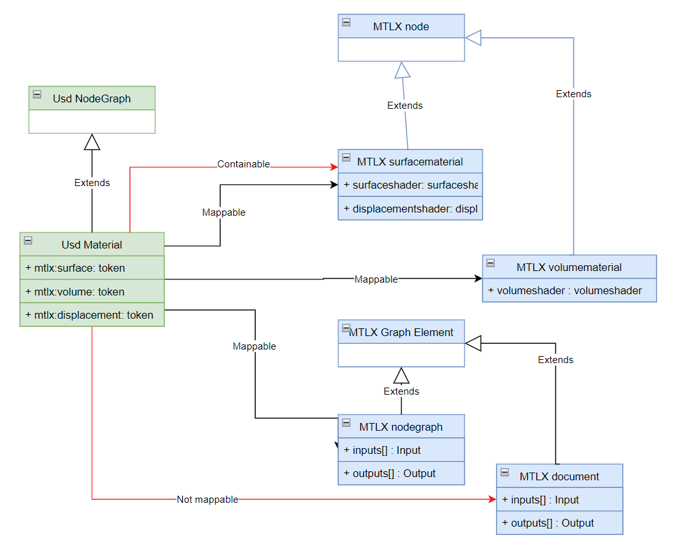
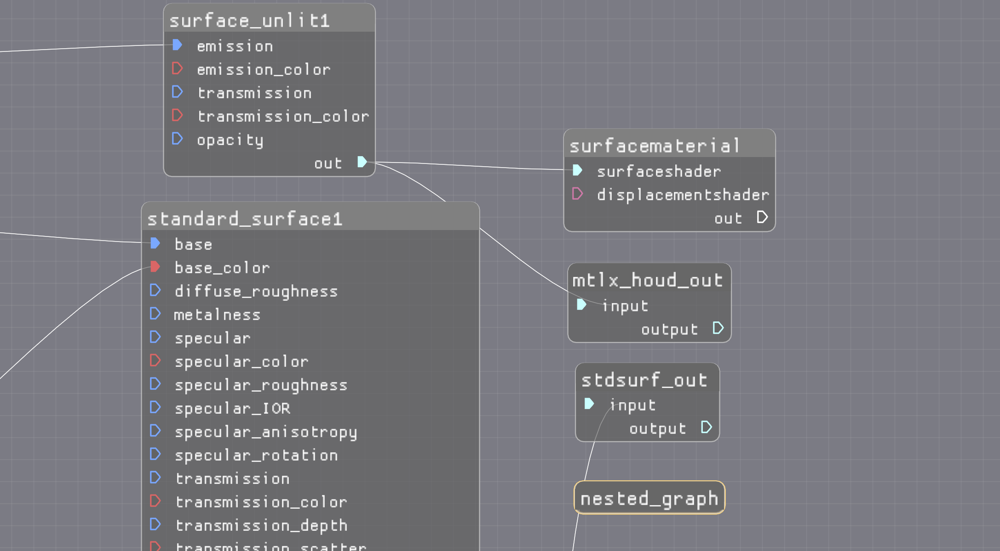
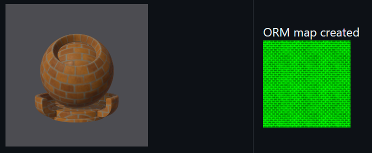

1. MaterialX and Usd
The Usd / MaterialX notebook
examines the
interoperability of material / shader graphs between Usd and MaterialX.
The following is summary of observations.
Hierarchy
Currently Usd can support arbitrary nesting of graphs. The MaterialX specification also denotes this support but this has not been implemented at the time of writing.
Usd will "flatten" nested graphs to a single level, but this functionally does not seem to be exposed via a public API.
For example the following graphs nodegraph "childNG" has to be re-parented to be under the
nodegraph "parentNG" in order to be supported in MaterialX.

It is possible to "flatten" graphs within MaterialX, but no such utility / API is provided by default.
In Usd, for encapsulation, shader graphs are children of a Usd material with reuse via referencing. In MaterialX materials are not parents of the graphs they reference. That is, no parent-child hierarchy / grouping is enforced. (For more see the Materials section)
There is currently a proposal to support MaterialX node graph hierarchies. For such a change it would be useful to revisit how "top" or Document level graphs behave. MaterialX Documents and child nodegraphs are both considered to be "graph elements" but Documents specify sepcial semantic meanings fo output ports (are treated as AOVs) and disallows input ports. A uniform treatment could provide a closer match with Usd, especially if parenting a MaterialX derived graph within a Usd hierarchy
Paths and Connections
- Usd specifies explicit output ports on nodes and graphs. MaterialX only does this for nodegraphs, requiring complex logic to discover and extract node output information.
- There is no uniform nor formal connection "API" in MaterialX as with Usd. This could be added to MaterialX to mask out the complexities due to the next point:
- There is no uniform syntax for specifying connections between
ports and nodes in a MaterialX graph resulting in the
requirement to examine multiple meta-data attributes in order to "compose" a path.
Variants result from:
- from differences in handling input output ports for nodes versus nodegraphs
- from differences in handling nodegraph (interface) inputs / outputs vs node inputs and outputs.
- handling of implicit channel extraction via additional meta-data attributes. Note that this does not exist in Usd.
-
MaterialX has no concept of absolute vs relative path notation to specify port paths. Note that these paths are not geometric dag paths used for material assignment
This contrasts with Usd which simply uses absolute path syntax for all connections (e.g. '/a/b/c') specified on input ports. Such path reference output ports which are always explicitly specified.
A "path" API in Usd has no correspondance in MaterialX. A MaterialX FilePath can be used
in lieu of this, or path modification can be done via string changes.
Note that MaterialX uses relative paths to form connections and does not allow for parent path syntax (such as "../"). This has the advantage of assuring that no connections are ever formed between ports which do not have the same parent. This rule appears for Usd as well, but it is possible to have absoluate paths which specify a connection to ports outside the parent scope.
There is a connection edge construct in MaterialX but this is only available within upstream
traversal within an iterator.
Downstream traversal is available in MaterialX relies on a caching system which is always dirtied on arbitrary attribute changes and not just connection changes.
Materials
Usd represents a material as a node graph (container). This allows for arbitrary inputs and outputs to exist, with connections being made to ports on child nodes under the material.
MaterialX used to have a similar concept for materials but only to provide a material "collection". As of version 1.38.6, this was replaced with material nodes with two specific variants:
- Surface materials:
surfacematerial - Volumetric materials: and
volumematerial
If bidirectional interop between Usd and MaterialX is performed, the question arises as to how handle the mapping between Usd and MaterialX materials.
The following diagram shows the class hierarchy for Usd and MaterialX. It is mostly the discrepancy between have one (Usd) as a graph and the other (MaterialX) as a pair of atomic nodes that allows for different approaches to mapping. 
Applications like Maya and Houdini use "graph containers" which more closely match a node graph.
If a Usd material graph is mapped to a MaterialX material node then arbitrary inputs and outputs have no place to map to and the interop is lossy.
Additionally, the Usd material ports are output ports while which need to be mapped to Materialx node input ports. That is, in Usd, these are output-to-output connections (as would occur in a MaterialX node-to-nodegraph) instead of input-to-output connections occurs with MaterialX node-to-node connections. The notebook shows the added logic complexity.
If a Usd material graph is mapped to a MaterialX nodegraph then it is no longer distinguishable as a "material". though Usd input and output ports are easily mappable to MaterialX.
- An interesting issue is what to do with MaterialX material nodes? These nodes cannot be children of a translated Usd material and have no natural port connection in Usd. For conversion from Usd this could be handled as additional terminal material nodes which reference the same child shader graph. This is a rather unconvential mapping and makes it difficult to perform the reverse mapping back to Usd.
Ports
For the most parts Usd ports correspond 1:1 with MaterialX ports. At the time of writing MaterialX
tokens do not appear to be supported in Usd. There are Usd token types but this has nothing to with
the MaterialX concept which is tokens used for string substiton on geometric and file name
identifiers and can be connectable similar to how ports can be connected.
Some differences of note:
- There is a superset of possible types in Usd versus MaterialX. This includes types which indicate precision (e.g. half-float vs float), signed and unsigned types, and various array types. Usage of Usd with MaterialX definitions should avoid any type mapping issues for interop.
- Usd uses
assetreferences vs MaterialX which has only file name references for image resources. At the current time binary resource references are not supported in MaterialX. - Usd uses
tokento represent shader ports on materials. This requires additional parsing of the port name to discover if the port maps to a surface, displacement, or volume shader type in MaterialX. - There is some minor string syntax difference for representing tuples in Usd versus MaterialX which requires some extra mapping logic.
Supported Nodes
Usd supports nodes which are not defined in MaterialX. As such there is no way to map these to MaterialX unless "dummy" nodes are added.
If MaterialX and non-MaterialX graphs are under the same parent, if they do not reference each other, it is possible to extract MaterialX subgraphs out and seems possible to re-parent them back in to a Usd hierarchy. Note that this was not attempted in the notebook example.
Material Assignment
Though MaterialX can support material assignments via it's look API, this was not examined
as the intent is to have Usd perform this role with the look interfaces being optional going
forward with the 1.39 release.
Usd-based versus Material-based Integrations
As part of the Libraries / Definitions notebook export was examined for Maya and Houdini. Currently they both reside within the context of integration with Usd.
Of note is that for Maya graphs that MaterialX material nodes are currently disallowed but sub-graphs are
allowed, while for Houdini material nodes and sub-graphs are allowed are both are not exportable.

This could be a cause for some confusion without clarification on how these map to MaterialX. (At time of writing Maya does not support MaterialX export). It will be interesting to see how each approach progresses, and also to see the approach taken by Blender for MaterialX / Usd mapping.
Currently only the MaterialX Graph Editor works without the notion of mapping to a Usd "container"
(material graph).
Below is a diagram with configurations which could cause "issues". This includes
having a material node in a node graph, and having next graphs.

For an integration, if MaterialX import is supported it is possible that these or
other graph configurations created may either be not supportable or require some type of
transformation such as "flattening" or remapping.
There can arise additional complications if these are MaterialX functional graphs used by a node definition as it is only at implementation usage time that an issue can arise. For example, during shader generation within a render delegate
These are still "early days" and will be interesting to see how this all works out.
2. MaterialX and glTF

Bi-directional conversion between MaterialX and glTF is available via the library and utilities found in this repo.
As MaterialX supports the glTF PBR surface shading model directly as of version 1.38.6, the mapping from a glTF surface shader to MaterialX is fairly straight forward. Supplementary nodes which match the glTF image mapping logic are provided as part of the MaterialX standard library and are used during translation.
The reverse process which is the more natural one requires "distilling" a MaterialX shading graph down to a glTF one.
If users an use only the MaterialX nodes supported which correspond to glTF then this mapping is more straight-forward. If not then a "baking" step is required to convert all upstream connected graphs into a single image, and if a non-glTF shading model is used then "shader translation" is required.
Below is an example of the "Brick" example shader which uses "Autodesk standard surface" which is mapped to
a glTF PBR surface material and the result of baking a "ORM" map (along with other maps).

Fortunately, translation and baking are provided as part of the code API. What is not currently handled
however is merging of multiple images into single images such as for ORM images used by glTF
shaders. This would be a useful utility, and could actually be done as a MaterialX shader graph.
Much discussion is occuring around Usd / glTF interop, but an interesting point to raise is whether MaterialX should be the intermedary representation and if so what role and tooling is useful. For example is baking via MaterialX useful when this can be done via Usd.
3. MaterialX Libraries
The creation of custom definitions is being done by a few integrations such as for Maya, Houdini, and appears to be the direction for Blender.
Agreement on semantics and syntax is under discussion. The
Libraries and Definitions notebook contains some current workflow investigations.
Note: This section is still WIP and will be filled in with more information based on findings from the notebook exploration and related discussions within the MaterialX TSC.